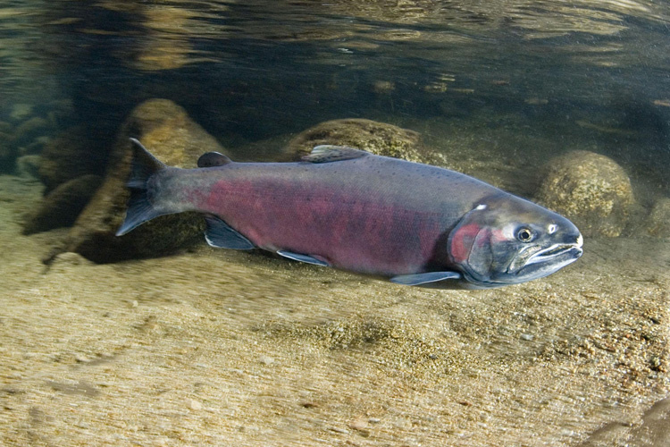
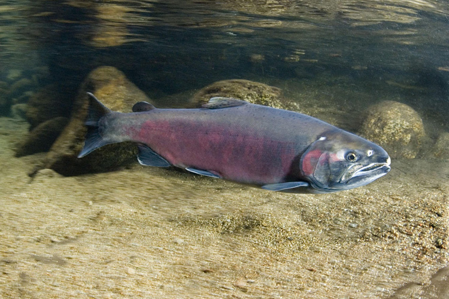

What are Coho and Chinook Salmon?
Coho and Chinook salmon are anadromous fish, meaning they begin life in fresh water, make their ways out to the ocean to feed and grow. When mature enough, they complete the life cycle by swimming up stream to spawn. This makes them vulnerable to a variety of threats.
There is a decline in Salmon populations, as recently as April 8th, 2023 the West Coast Salmon Fishing Season was declared shut down as the populations face dwindling numbers.
The salmon need time to rebound and the government needs to allocate funding for the cause, and implement programs for salmon survival.

 


What are some threats faced by salmon?
Some of the threats they face may seem more obvious such as blocked access by dams, others factors that require ongoing observation for things such as water quality, which can often times be effected by things like the presence of mining activity, and disease is often spread from aquafarms containing non-local species at poorly managed hatcheries.
The second variable looks at the percent of mines created before salmon were declared endangered under the California Endangered Species act in 1989. Percentages of rivers with wild and scenic designation is the third variable. Could this be a enactment to help salmon populations?

Additional threats
The fourth variable displays the percent of dams built during the dam era, there is enough reason to plead why hydropower should not be seen as a reliable/feasible source of hydroelectricy or as a source of water stroage in an increasingly hotter climate.
Which leads us to our final variables available which include select months rainfall average and predicted 2040 averages for that month. Less rainfall is leading to more drought and drier, warmer streams making it difficult for spawning as salmon attempt to swim upstream. April and November being crucial months for mating season runs.